7.6 Exercices¶
Exercice 1¶
Soit
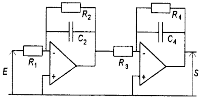On désire asservir le système dont les composants sont : \(R = 10 k\Omega\) et \(C = 100 nF\) :
démontrer que la fonction de transfert s’écrit : \(G(p)=\frac{1}{(1+\tau*p)^2}\) avec: \(\tau = 1 ms\)
déterminer les paramètres de la réponse indicielle en boucle ouverte
déterminer les caractéristiques de la réponse en boucle fermée
déterminer par calculs le correcteur qui permettrait d’obtenir une valeur de \(\zeta=0.45\) ; préciser quel intérêt il y a à choisir cette valeur de \(\zeta\)
déterminer graphiquement le correcteur proportionnel qui permettrait d’assurer une marge de phase de 45° et donner les caractéristiques de la réponse indicielle
déterminer le correcteur PI qui permettrait d’assurer une marge de phase de 45° et préciser quel intérêt il propose par rapport au correcteur précédent
Solution:¶
1.¶
2.¶
Par identification avec un système du second ordre sous forme standard :
\(G_{BO}(p)=\frac{1}{10^{-6}*p^2+2*10^{-3}*p+1}\) soit: \(\begin{cases} \omega_n=1000 rad/s\\ \zeta=1 \end{cases}\)
La réponse indicielle est non-oscillante (\(\zeta\)=1.00) => pas de dépassement.
Temps de réponse à 5% = 5ms
Erreur statique = 0.7%
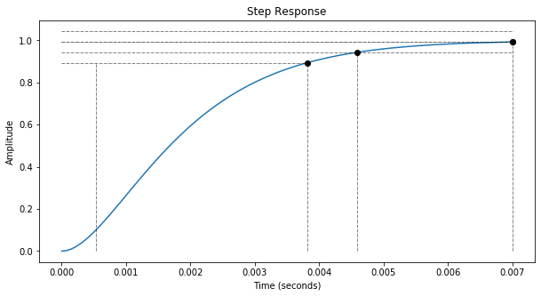Avertissement
Attention: Ici, on cherche l’erreur d’un système en BO!
3.¶
Si on exprime la fonction de transfert en BF sous forme standard :
\(G_{BF}(p)={\frac {\frac{1}{2}}{1+10^{-3}*p+500*10^{-9}*p^2}}\) soit: \(\begin{cases} \omega_n=1414 rad/s\\ \zeta=0.7 \end{cases}\)
Par programmation, on obtient bien: \(\zeta\)=0.7 et \(\omega_n\)=1414 rad/s.
Le gain statique est de 0.5 donc l’erreur statique est de \(\varepsilon_0=\frac{1}{1+K}\)=50% (Classe(N)=DegréErreur(r)=0, K=1 en BO)
Le dépassement est de: \(d=100*e^{\frac{-\pi*0.7}{\sqrt{1-0.7^2}}}\)=4.5% en \(t=\frac{\pi}{1414*\sqrt{1-0.7^2}}\)=3.1ms
Temps de réponse à 5% est de \(\frac{3}{\omega_n}\) = 2.066ms
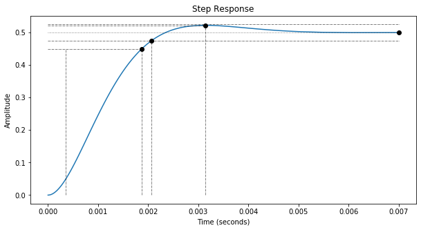4.¶
Soit la fonction en BO qui devient :
Ce qui donne en BF:
Par identification, on a:
\(\begin{cases} \zeta = 0.45\\ \frac{2\zeta}{\omega_n}=\frac{2*10^{-3}}{K+1}\\ \frac{1}{\omega_n^2}=\frac{10^{-6}}{K+1} \end{cases}\)
D’où
\(\begin{cases} \zeta=0.45\\ K=3.938=11.9 dB\\ \omega_n=2222 rad/s \end{cases}\)
Par programmation, on obtient bien: \(\zeta\)=0.45 et \(\omega_n\)=2222 rad/s.
Le gain statique est de 0.8 donc l’erreur statique est de \(\varepsilon_0=\frac{1}{1+K}\)=20% (car N=r=0, K=3.94 en BO).
L’intrérêt de choisir un \(\zeta\) de 0.45 permet d’avoir un système présentant le meilleur compromis: temps de réponse/dépassement (stabilité).
Le dépassement est de: \(d=100*e^{\frac{-\pi*0.7}{\sqrt{1-0.7^2}}}\)=20.6% en \(t=\frac{\pi}{1414*\sqrt{1-0.7^2}}\)=1.6ms
Temps de réponse à 5% est de \(\frac{3}{\omega_0}\) = 2.364ms
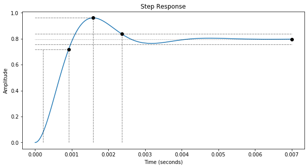5.¶
+ show/hide codeGraphiquement, on relève que pour \(\varphi=-135°\), \(M_{dB}\) = -16.7 dB.
On choisira un correcteur P: \(K_p\) = 16.7 dB = 6.82.
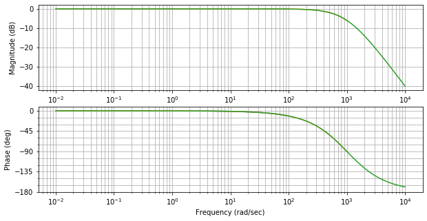 + show/hide codeMarge de phase du système corrigé = 45.0°.
Les paramètres du système du second ordre deviennent : \(\zeta\)=0.36 et \(\omega_n\)=2797 rad/s.
L’erreur statique est de \(\varepsilon_0=\frac{1}{1+K}\)=13% (N=r=0, K=6.82 en BO)
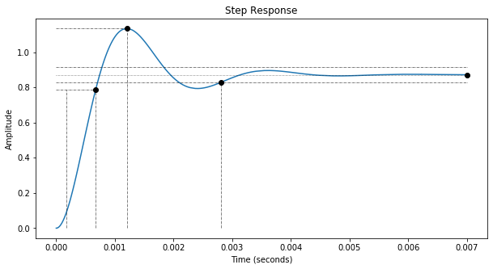6. Détermination du correcteur PI:¶
Constante de temps d’intégration : \(\tau_I = 1ms\) (suppression d’un pôle)
le système devient, en BO : \(G_{BO}(p)=\frac{K_P}{10^{-3}*p*(1+10^{-3}*p)}\)
On calcule : \(\varphi\) = -135° pour \(\omega\) = 1001 rad/s ce qui correspond à \(M_{dB}\) = -3.0 dB.
On choisira un correcteur P: \(K_p\) = 3.0 dB = 1.416.
soit le correcteur : \(C(p)=\frac{1416*(1+10^{-3}*p)}{p}\)
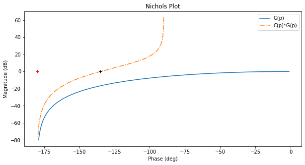
L’erreur statique est de \(\varepsilon_0=0\) (r=0 mais N=1 grâce au correcteur I).
Exercice 2¶
Soit un ampli op (sans compensation interne en fréquence) dont la fonction de transfert en BO est donnée par :
\(G(jf)=\frac{A_0}{(1+j\frac{f}{f_1})*(1+j\frac{f}{f_2})}\) avec: \(\begin{cases} A_0 = 10^2\\ f_1 = 1 MHz\\ f_2 = 10 MHz \end{cases}\)
On vous demande de:
analyser le diagramme de Black-Nichols qui vous est donné pour en déduire les caractéristiques du système en BF
déterminer le correcteur proportionnel qui permettrait d’assurer une marge de phase de 45° et donner les caractéristiques de la réponse indicielle
déterminer le correcteur PI qui permettrait d’assurer une marge de phase de 45° et préciser quel intérêt il propose par rapport au correcteur précédent
Solution:¶
1.¶
Le système ne présente pas une marge de phase insuffisante : 20°
En boucle fermée : - son gain statique est de 0 dB - le facteur de surtension est de 10 dB
⇒ la réponse temporelle présentera une forte oscillation
+ show/hide codeL’erreur statique est de \(\varepsilon_0=\frac{1}{1+K}\)=0.990% (N=r=0, K=100 en BO)
Temps de réponse à 5% = 523 ns
Le dépassement est de: d=57.6% en t = 100 ns
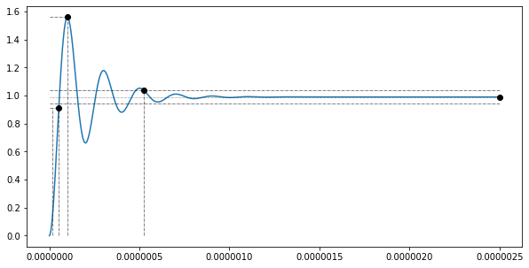2.¶
+ show/hide codeGraphiquement, on relève que pour \(\varphi=-135°\), \(M_{dB}\) = 14.7 dB.
On choisira un correcteur P: \(K_p\) = -14.7 dB = 0.185.
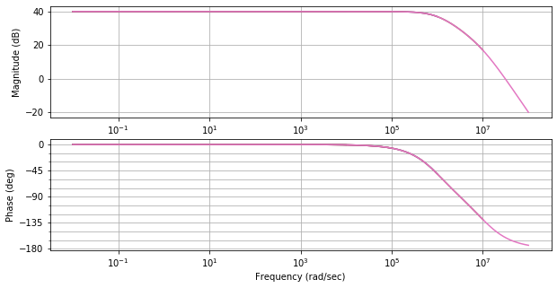 + show/hide codeMarge de phase du système corrigé = 45.0°.
Les paramètres du système du second ordre deviennent: \(\omega_n\) = 1.39e+07 rad/s et \(\zeta\) 0.394.
L’erreur statique est de \(\varepsilon_0=\frac{1}{1+K}\)=5.1% (N=r=0, K=18.5 en BO)
Le dépassement est de: d=26.0% en t = 245 ns
Temps de réponse à 5% = 548 ns (\(\approx\frac{8}{\omega_n}\))
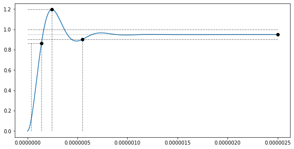3. Détermination du correcteur PI:¶
Constante de temps d’intégration : \(\tau_I = \frac{1}{2\pi*10^6} = 159 ns\) (suppression du pôle dominant)
le système devient, en BO : \(G_{BO}(p)=\frac{100*K_p}{159*10^{-9}*p*(1+159*10^{-9}*p)}\)
On calcule : \(\varphi\) = -135° pour \(\omega\) = 6.28e+07 rad/s ce qui correspond à \(M_{dB}\) = 17.0 dB.
On choisira un correcteur P: \(K_p\) = -17.0 dB = 0.1413.
soit le correcteur : \(C(p)=\frac{888*10^3*(1+159.2*10^{-9}*p)}{p}\)
qui s’écrit : \(C(jf)=\frac{141.4*10^3*(1+j\frac{f}{10^{6}})}{jf}\)
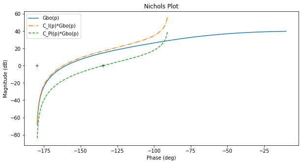
Exercice 3¶
Soit un amplificateur dont la fonction de transfert en BO est donnée par :
On vous demande de:
analyser le diagramme de Black-Nichols qui vous est donné
déterminer les caractéristiques de la réponse indicielle en BF
déterminer le correcteur P, PI ou PID qui permettrait d’assurer une marge de phase de 45°, une erreur statique la plus faible possible et d’obtenir un temps de réponse à 5% de 0,1 s
Solution:¶
1.¶
Le système présente une marge de phase de 60°
2.¶
Si on exprime la fonction de transfert en BF sous forme standard :
\(G_{BF}(p)=\frac{\frac{10}{11}}{\frac{0.1}{11}p^2+\frac{1.1}{11}p+1}\) soit: \(\begin{cases} \omega_n = 10.5 rad/s\\ \zeta = 0.52\\ \end{cases}\)
Par programmation, on obtient bien: \(\omega_n\)=10.5 rad/s et \(\zeta\)=0.52.
Gbf =
10
--------------------
0.1 s^2 + 1.1 s + 11
L’erreur statique est de \(\varepsilon_0=\frac{1}{1+K}\) = 9.073% (N=r=0, K=10 en BO)
Le dépassement est de: d = \(100*e^{{\frac{-\pi*0.52}{\sqrt{1-0.52^2}}}}\) = 14.4% en t = \(\frac{\pi}{10.5*\sqrt{1-0.52^2}}\) = 352 ms
Le temps de réponse à 5% est de \(\frac{5}{\omega_n}\) = 505 ms (>0.1s demandée)
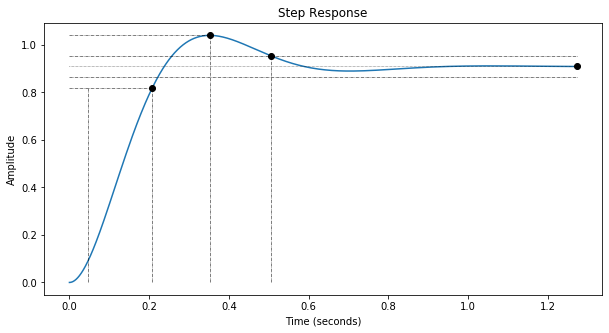3.¶
a) Correcteur P¶
+ show/hide codeGraphiquement, on relève que pour \(\varphi=-135°\), \(M_{dB}\) = -5.3 dB.
On choisira un correcteur P: \(K_p\) = 5.3 dB = 1.843.
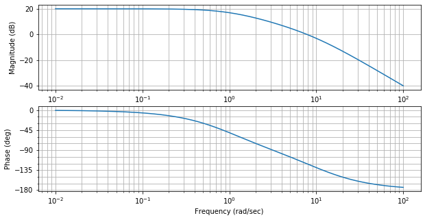 + show/hide codeLes paramètres du système du second ordre deviennent: \(\omega_n\) = 13.9 rad/s et \(\zeta\) 0.395.
L’erreur statique est de \(\varepsilon_0=\frac{1}{1+K}\) = 5.1% (N=r=0, K=18.43 en BO)
Le dépassement est de: d = 25.8% (= \(100*e^{{\frac{-\pi*0.4}{\sqrt{1-0.4^2}}}}\)) en t = 245 ms (= \(\frac{\pi}{13.9*\sqrt{1-0.4^2}}\))
Le temps de réponse à 5% est de 551 ms ( \(\approx\frac{8}{\omega_n}\)) (>0.1s demandée)
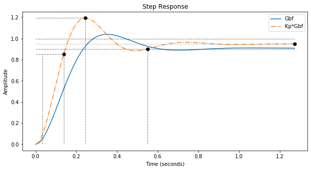b) Correcteur PI¶
Constante de temps d’intégration : \(\tau_I = 1 s\) (suppression du pôle dominant)
le système devient, en BO : \(G_{BO}(p)=\frac{10*K_p}{p*(1+0.1*p)}\)
On calcule : \(\varphi\) = -135° pour \(\omega\) = 10 rad/s ce qui correspond à \(M_{dB}\) = -3.0 dB.
On choisira un correcteur P: \(K_p\) = 3.0 dB = 1.41.
soit le correcteur : \(C(p)=\frac{1.41*(1+p)}{p}\)
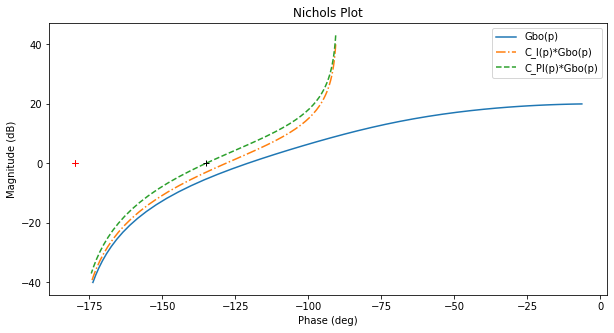 + show/hide code
Les paramètres du système du second ordre deviennent: \(\omega_n\) = 11.9 rad/s et \(\zeta\) 0.421.
L’erreur statique est de \(\varepsilon_0=\frac{1}{1+K}\) = 0.0% (r=0 mais N=1 BO grâce au correcteur I)
Le dépassement est de: d = 23.3% (= \(100*e^{{\frac{-\pi*0.4}{\sqrt{1-0.4^2}}}}\)) en t = 291 ms (= \(\frac{\pi}{11.9*\sqrt{1-0.4^2}}\))
Le temps de réponse à 5% est de 618 ms ( \(\approx\frac{8}{\omega_n}\)) (>0.1s demandée)
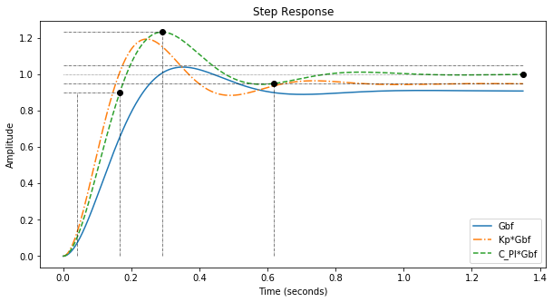c) Correcteur PID¶
Constante de temps d’intégration : \(\tau_I = 1 s\) et \(\tau_d = 0.1 s\) (suppression des pôles dominants)
le système corrigé devient, en BO :
\[G_{BO}(p)=\frac{10*K_p}{p}\],soit en BF:
\[G_{BF}(p)=\frac{1}{1+\frac{p}{10*K_p}}\]Soit un système du premier ordre dont le temps de réponse à 5% (= \(3\tau\)) s’exprime : \(\frac{3}{10*K_P}\)
Pour obtenir \(t_{r5\%}=0.1 s\), il faut : \(K_P = 3\).
La réponse indicielle sera celle d’un système du premier ordre (erreur statique nulle et pas de dépassement)
+ show/hide codeLes paramètres du système du second ordre deviennent: \(\omega_n\) = 30.0 rad/s et \(\zeta\) 1.000.
L’erreur statique est de \(\varepsilon_0=\frac{1}{1+K}\) = 0.0% (r=0 mais N=1 BO grâce au correcteur I)
Le dépassement est de: d = 0.0% (= \(100*e^{{\frac{-\pi*1}{\sqrt{1-1^2}}}}\)) en t = 1350 ms (= \(\frac{\pi}{30*\sqrt{1-1^2}}\))
Le temps de réponse à 5% est de 100 ms (= 0.1s demandée => OK)
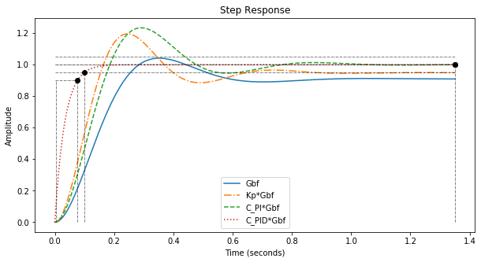 + show/hide code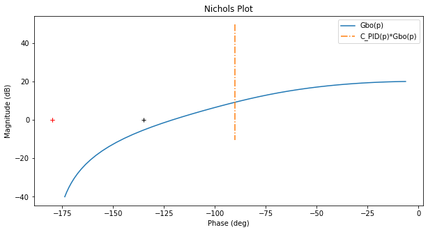